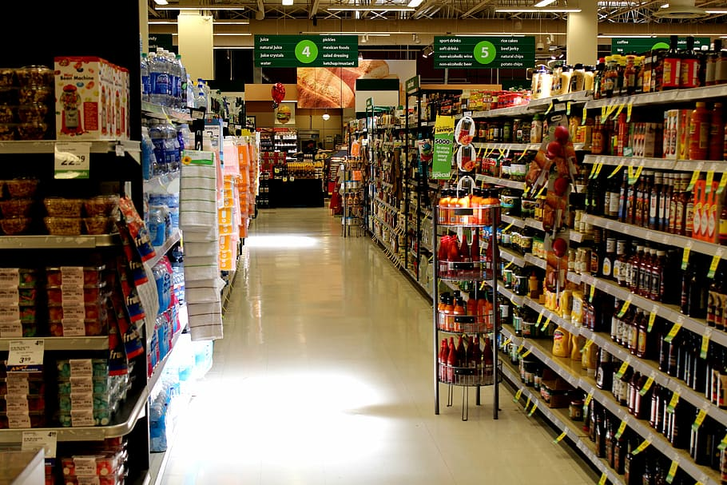
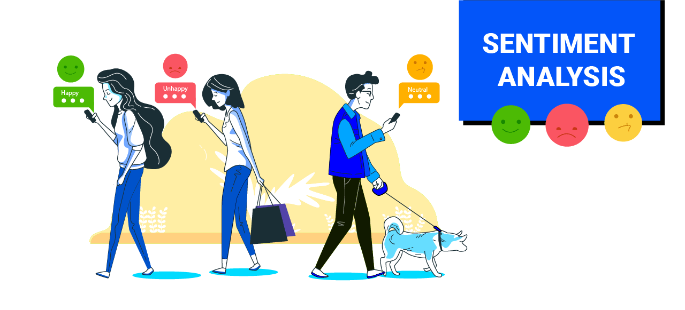

This project by Quantium's retail analytics team delved into analyzing customer purchasing behavior and assessing the impact of a store trial on sales performance. Through meticulous data analysis, insights were derived to optimize marketing strategies and enhance customer engagement for a retail company. Key findings include identifying customer segments, understanding chip consumption habits, and evaluating the effectiveness of trial layouts. Leveraging Python libraries such as NumPy, Pandas, Seaborn, and Matplotlib, this project culminated in actionable recommendations to drive sustainable growth and success for the retail business.
Tools used: Python libraries( Numpy, Pandas, Seaborn and matplotlib)


Embark on a journey through the analysis of WhatsApp chat data, where communication patterns and sentiment dynamics within a chat group are meticulously explored. By preprocessing the raw chat data and conducting sentiment analysis using a pre-trained transformer model, this project unveils insights into message frequency, sender participation, and sentiment distribution. Leveraging Python libraries such as Pandas, Matplotlib, Seaborn, and Transformers, this analysis offers a deep understanding of online group communication behaviors, paving the way for meaningful insights into digital social interactions.
Tools used: Python libraries(Pandas, Seaborn, matplotlib and Transformers)
This project involved cleaning and preparing data from three datasets forming about 2,350 tweets: Twitter Archive, Image Predictions, and Tweet Metadata which was obtained via the tweeps API. The data cleaning and preparation process addressed quality and tidiness issues, including incorrect datetime format, invalid dog names, and separated data columns. After combining the datasets, six analytical questions were addressed, including the distribution of ratings, popular dog breeds and names, correlation between retweet count and favorite count, and frequency of dog breeds in the data. Despite the challenges, a clean and well-structured dataset was created, ready for further analysis.
Tools used: Python libraries( Numpy, Pandas, Seaborn, matplotlib and Json)
The Sprocket Central Pty Ltd Data Analytics Approach by KPMG is a virtual internship that aims to help the company increase sales by analyzing provided datasets. The analysis covers topics such as customer distributions, bike-related purchases, job industry distributions, wealth segmentation, and more. The project includes data quality assessment, model development using the RFM analysis and customer classification, and providing insights such as most customers being aged between 40-49 and females making up the majority of bike-related sales.
Tools used: Word ,Excel, powerpoint, Power BI

Prosper Loan Exploratory Analysis is a data analytics project that aims to explore the various factors that influence loan performance. The project used the Prosper loan dataset that contains 113,937 loans with 81 different variables for each loan, such as the loan amount, the interest rate paid by the borrower, the loan status, the borrower's income, and many more. The project's findings provide valuable insights into the impact of various factors, such as homeownership, borrower's income, Prosper risk level, and loan origination month, on loan performance. The project's key insights can help inform lending decisions and strategies.
Tools used: Python libraries( Numpy, Pandas, Seaborn and matplotlib)

Analyzed a dataset of 10,866 movies spanning from 1960 to 2015. Explored questions on genre popularity, revenue, movie production, and the relationship between popularity and revenue. Concluded that science fiction is the most popular genre, while action is the most successful in terms of revenue. Also found that the number of movies produced has increased over the years, with 196 movies released in 2011. Avatar generated the most revenue and popularity is positively correlated with revenue.
Tools used: Python libraries( Numpy, Pandas, Seaborn and matplotlib)
View Project

Social buzz is a fast growing technology unicorn with Over 100,000 posts per day, 36,500,000 pieces of content
per year, Social buzz will like to understand their customer engagment and how to capitalize on their rapid growth.
An analysis of their content categories that highlights the top 5 categories with the
largest aggregate popularity was done. Using Microsoft SQL Server, I identified,extracted,cleaned and merged columns which will be needed in my analysis from 6 different datasets and created an insightful visualization and powerpoint presentation to address the requirements of the project
Tools used: Microsoft SQL Server ,Tableau,Powerpoint,Excel
Sports clothing and athleisure attire is a huge industry, worth approximately $193 billion in 2021 with a strong growth forecast over the next decade.
In this Project, I played the role of a product analyst for an online sports clothing company. The company is specifically interested in how it can improve revenue. I dived into product data such as pricing, reviews, descriptions, and ratings, as well as revenue and website traffic, to produce recommendations for its marketing and sales teams.
Tools used: SQL

In this project, I performed a data quality assessment and clean up on a housing dataset making it more standardized for analysis.
Tools used: Microsoft SQL Server
Performed Exploratory analysis to explore the U.S. DOT Air Travel Consumer 2015 dataset. Data wrangling was performed on over for 5,000,000+ commercial airline flights before exploratory analysis was done.
Tools used: Power BI
Performed data exploration on Covid-19 datasets gotten from our world data and developed a user interactive dashboard to visualize key insights gotten from datasets
Tools used: Microsoft SQL Server, Tableau
Performed data exploration on Cholera Outbreak 1853 dataset gotten from National Archive of Sweden and developed a user interactive dashboard to visualize key insights gotten from datasets
Tools used: Excel,Power BI